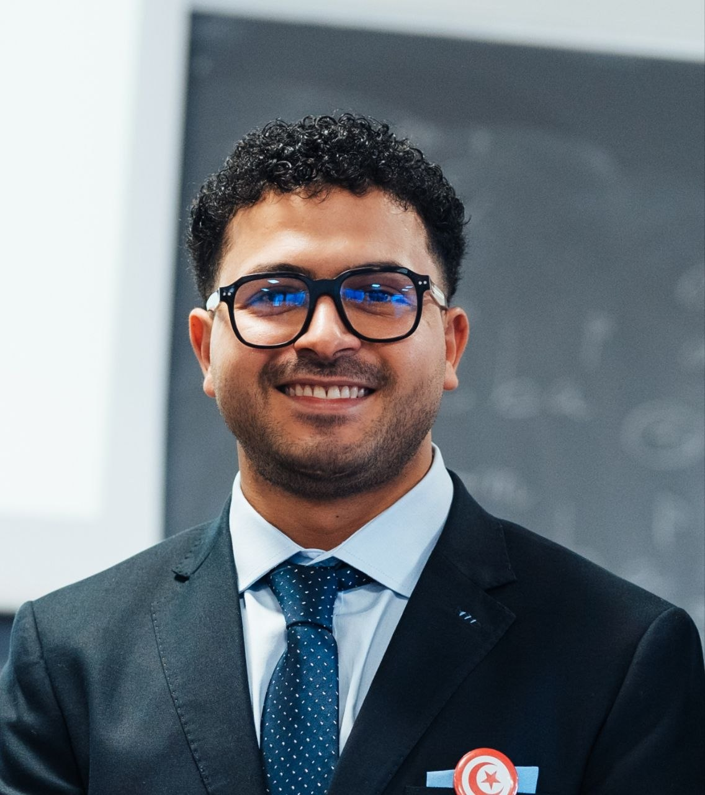

My home lab is where I test things before I trust them. It runs on VPS servers and covers the full loop: a Kubernetes cluster, workloads deployed to it, monitoring that actually alerts, and backups that have been restored at least once.
A K3s cluster with one control plane node and two workers. Workloads are declared in manifests, released with rolling updates and organized with namespaces. The cluster is managed through Portainer, which keeps nodes, workloads and logs in one place. Containers that used to run directly on the hosts were migrated into the cluster, so there is one place where workloads live and one place where they are observed.
Grafana and Prometheus collect metrics from cAdvisor, node and blackbox exporters, covering containers, hosts and endpoints, with Netdata alongside for real-time metrics and anomaly detection. Servers and databases are backed up on a schedule to my local server with rsync, with a retention policy, integrity checks and failure notification.
A retrieval-augmented generation stack that gives my agents long-term memory instead of a blank context on every run. The local version mirrors the online one and adds more agents, each tuned for a specific task.
Notes and documents are embedded locally, stored in an index, and retrieved at query time, so answers come from real stored context instead of guesswork. Retrieval is hybrid: keyword matching and vector similarity run together, then results are re-ranked so the context is not five paraphrases of the same paragraph.
Each agent has its own temperature setting, from 0.3 for deterministic, factual retrieval up to 1.9 for creative, high-variance generation. Temperature is a deliberate design choice for every agent, not a default nobody looks at.
A separate agent runs automated tests against my servers on its own schedule, detects anomalies and reports them, instead of waiting for me to notice downtime. It complements the metrics stack: proactive checks on top of passive dashboards.
The online RAG reaches my local lab over SSH keys, with no passwords and no shared secrets. Permissions are scoped so the link can do exactly what it needs and nothing more, which means an exposed entry point cannot reach the rest of the lab.
I joined as a DevOps intern on a live production product: a Next.js front end, headless WordPress, and a database, all running in containers. This is where I moved from managing servers to owning delivery.
The internship turned into a full-time position. Instead of a single project, I now manage the whole stack together with the DevOps team.
Day to day this means keeping production applications shipping without downtime, keeping the monitoring honest, and making sure a deployment can be reversed in one step if it goes wrong.
Responsive digital menu with photos and category filters, designed, built and published on my own. oussama-boukhachem.github.io/HayMenu
Benchmarking pipeline comparing execution time, memory usage and resource consumption between AI-generated and hand-written code, built on the Apache Ignite codebase.
Public platform connecting citizens to local services, awarded by ISET Tataouine and featured in national media.